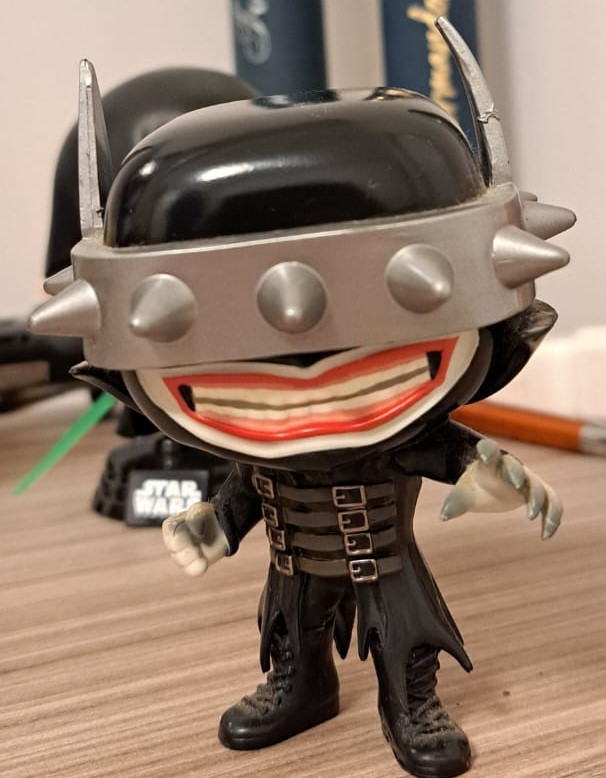
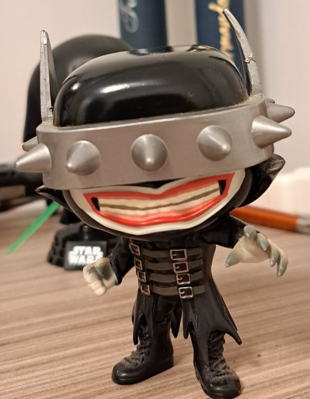
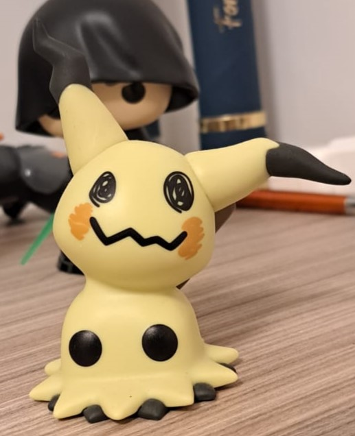
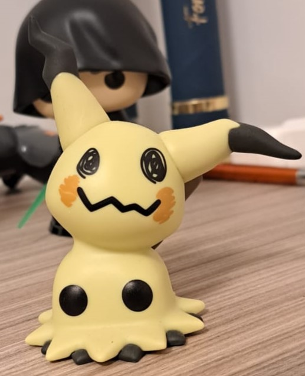
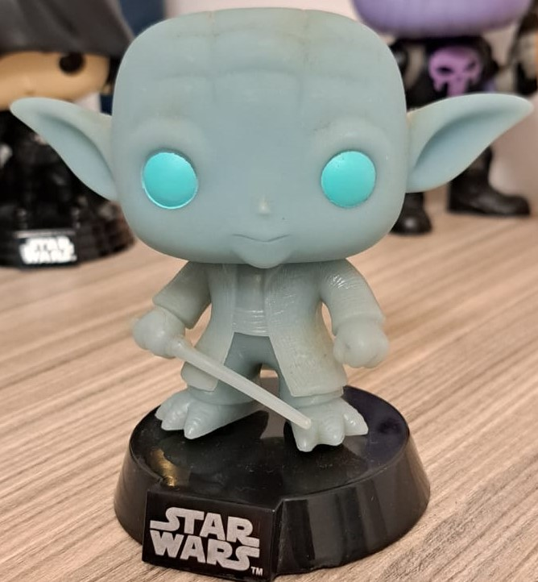
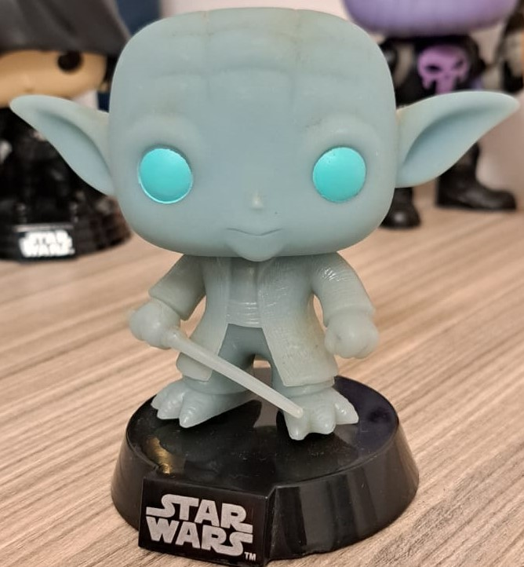
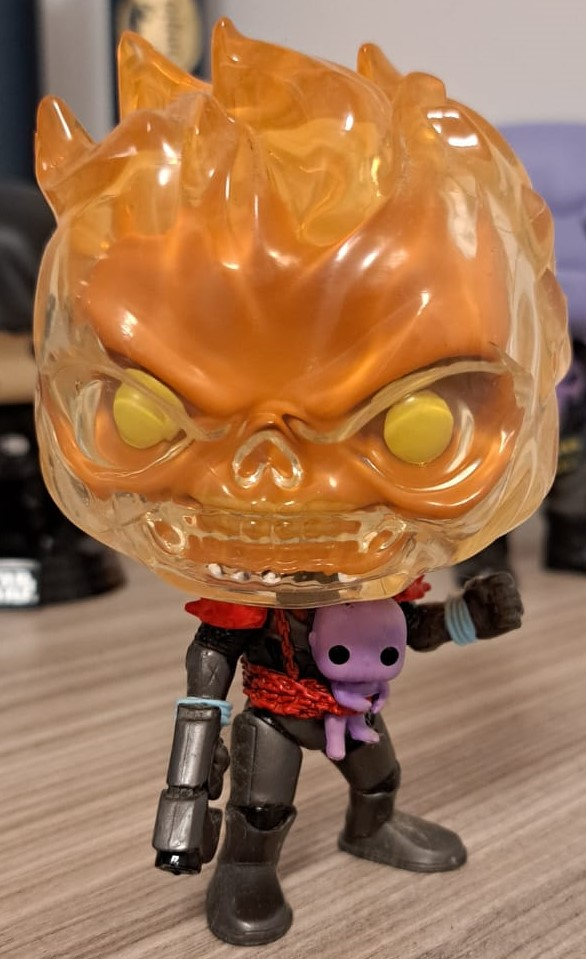
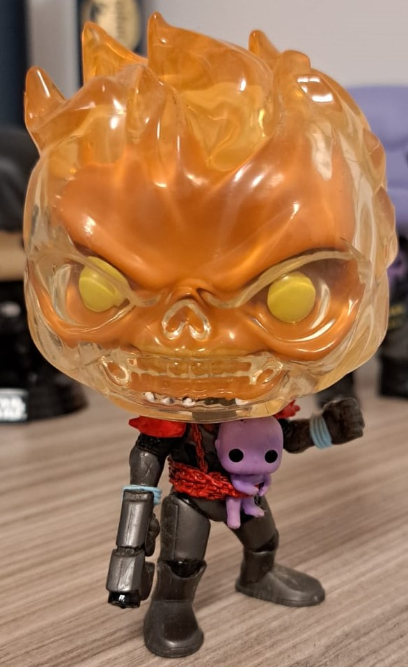

Batman que Ri (Vilão da primeira saga da minha coleção de hqs)


Batman que Ri é uma versão do Dark Multiverse do Batman, que enloqueceu após matar o Coringa. Aparecendo na primeira vez
durante a saga Metal, e sendo o vilão principal de sua continuação, a saga Death Metal.
Mimikyu (Meu pokemon favorito)


Mimikyu é um pokemon do tipo Fantasma e Fada, possuindo uma forma verdadeira desconhecida ele se disfarça
de Pikachu para conseguir se aproximar de outros pokemons e pessoas, sendo assim classificado como Pokemon disfarce.
Yoda Fantasma (Meu 1º Funko)


O fantasma do lendário mestre Jedi Yoda, que surge como um Fantasma da Força ao lado de Anakym e Obi-Wan
no final do filme Star Wars: O Retorndo do Jedi. Curiosidade: essse funko brilha no escuro .
Eddie Ciborgue (Meu 100º Funko)

Eddie é o mascote da banda de Heavy Metal Iron Maiden, estapando todos os albuns da banda. Com o Eddie Ciborgue
estapando o album Somewhere In Time de 1986, com este Funko sendo da linha feita em homenagem a turnê FuturePast
junto com outros 3 Funkos.
Motoqueiro Fantasma Cósmico (Meu herói favorito)


O Motoqueiro Fantasma Cósmico é um Frank Castle, conhecido como o Justiceiro, de um futuro alternativo no qual Thanos
venceu e eliminou toda a vida da terra. Após morrer ele acabou indo para o inferno e fazendo um pacto com o Mephisto,
o principal capeta da Marvel, assim voltando a vida como um espiríto da vingança, o Motoqueiro Fantasma, determinado em se vingar de quem o matou, Thanos.
Como não havia mais vida na Terra ele acabou vagando por centenas de anos sozinho, assim eloquecendo. Um dia Galactus,
ferido de um batalha contra o titã louco, apareceu na Terra para devora-la, como o Frank era o único que restava na Terra,
eles conversaram, assim ele se tornou um arauto do Galactus e partiu em busca do Thanos junto de seu mestre e virando
o Motoqueiro Fantasma Cósmico. Quando eles se enfrentam o Galactus acaba sendo morto pelo titã, mas acaba transformando
o motoqueiro em seu braço direito, após isso um Surfista Prateado portando o Mjonir de Thor e o mata. Jungando que ele
foi morto injustamente pelo martelo de seu filgo, Odin decide acolher sua alma em Valhalla, o que não da certo pois ele
arruma encrenca com outros habitantes de lá, assim Odin decide trazer ele devolta para a vida dando a chance dele escolher
em qual ponto da linha do tempo ele o deixaria. Frank sem pensar duas vezes decide ir para a época em que o Thanos era um bebê
para mata-lo. Ao chegar lá e ultilizar o olhar da penitência, que o permite ver os pecados das pessoas, ele vê que o bebê
ainda não cometeu nenhumm erro, assim decidindo o criar.